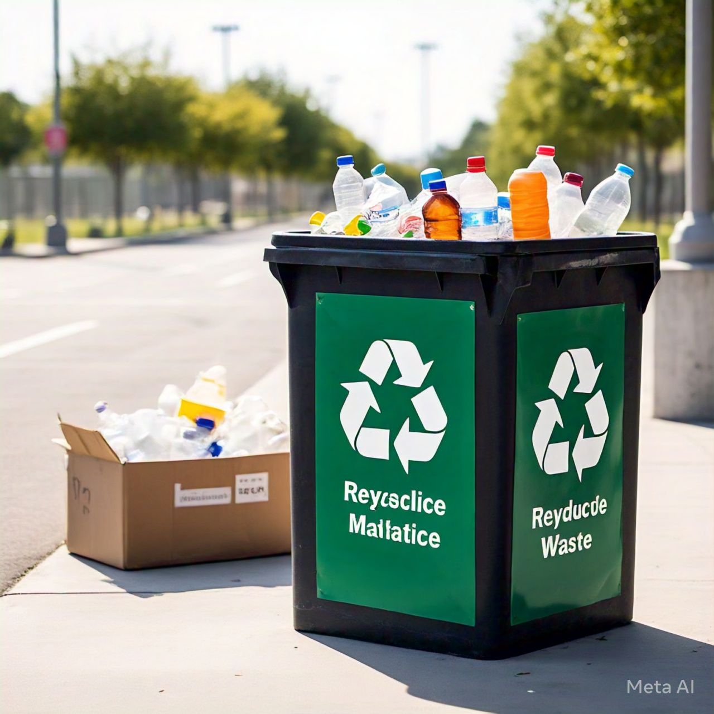
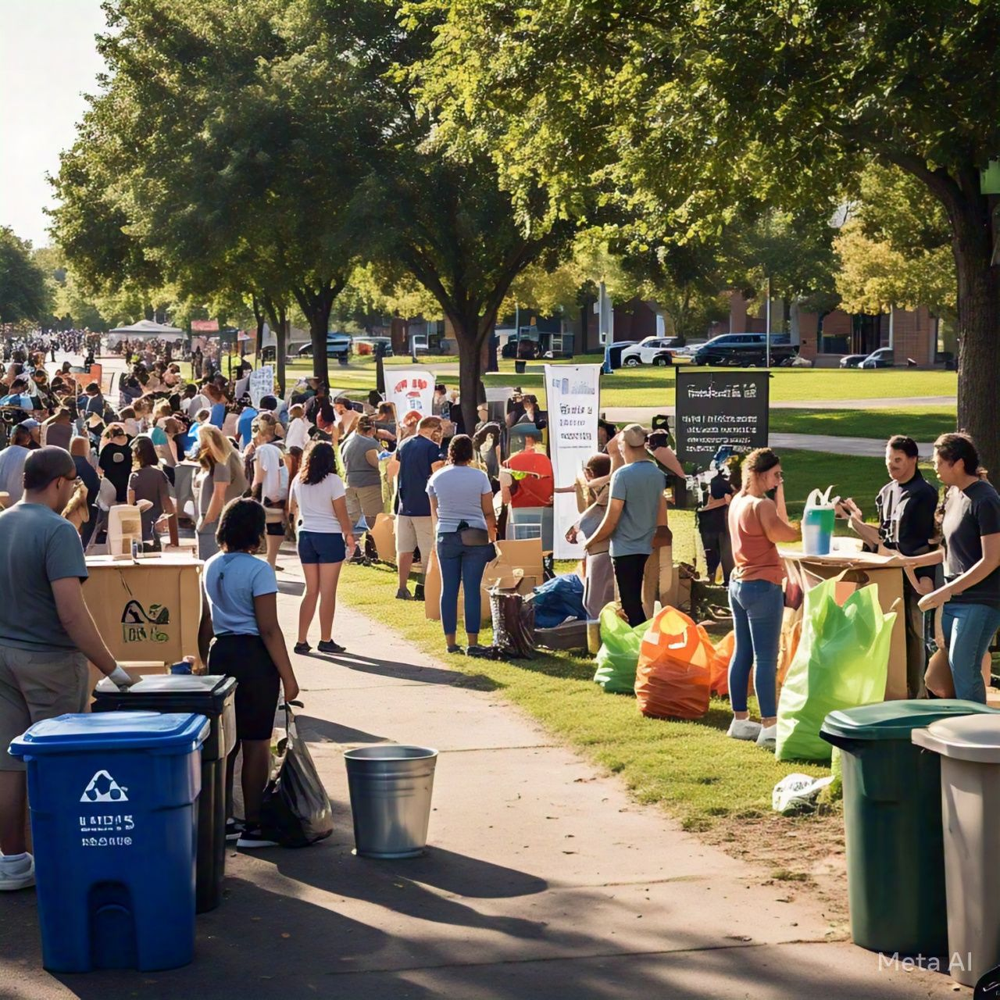
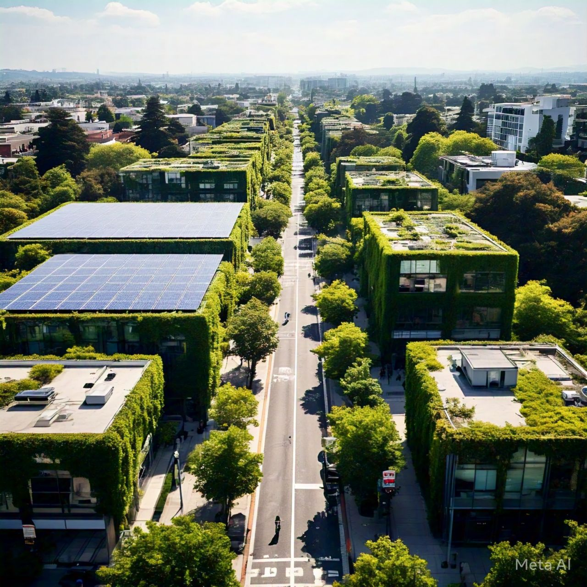

Evaluación de Escenarios: En el mejor escenario, la cantidad de basura disminuye significativamente gracias a programas de reciclaje efectivos y una comunidad concienciada. En el peor, la basura no gestionada genera problemas de salud y medioambientales.

Acciones Clave: Reducir basura con sistemas de reciclaje, educar a la comunidad y monitorear el progreso. Estas acciones promueven un cambio ambiental y social.

Reflexión sobre Estándares: Identificar estándares claros para evaluar el impacto del proyecto, como calidad ambiental, cantidad de materiales reciclados y satisfacción comunitaria.
Estándares Propuestos: Incluyen reducción de basura, implementación de sistemas de reciclaje, calidad ambiental, y análisis de costo-beneficio.
Impacto Esperado: Comunidades más comprometidas, mejora del medio ambiente y oportunidades económicas relacionadas con la gestión de residuos.
